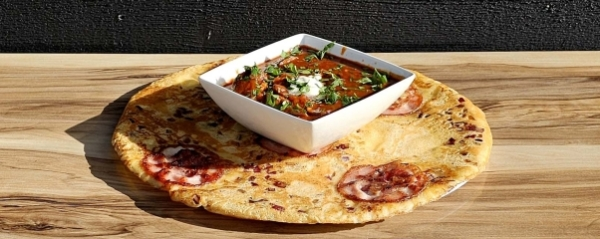
Woest wild lekkers
Spek-uipannenkoek rijkelijk belegd met hertengoulash.
22,00De Hoef, aan de Kromme Mijdrecht, sinds 1999
Voor een heerlijke pannenkoek, gezellige lunch of gewoon lekker samen uit eten. Met de kinderen, met z'n tweeën of met een hele groep.
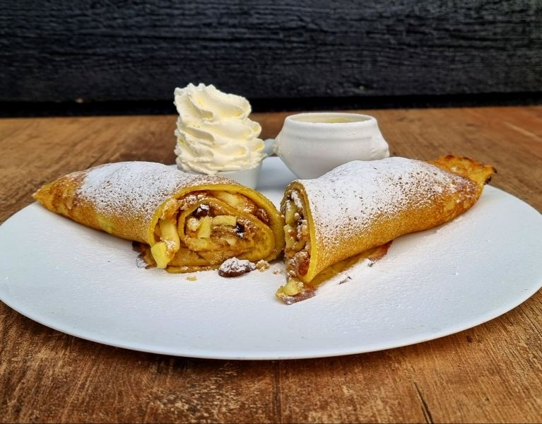
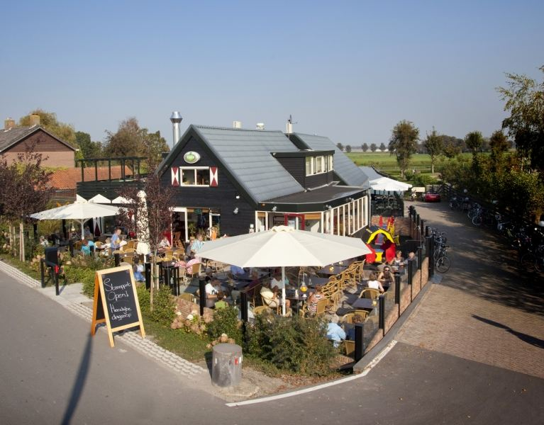
Onze Apfelstrudel Pannenkoek
Sinds 1999 is Pannenkoekenrestaurant De Strooppot in De Hoef een gezellige plek voor jong en oud. Midden in het Groene Hart, met uitzicht over de rivier de Kromme Mijdrecht en de omliggende polders, kun je bij ons terecht voor een kop koffie, een lekkere lunch of natuurlijk een heerlijke pannenkoek.
Als lid van de Vereniging van Erkende Pannenkoekenrestaurants bakken we onze pannenkoeken ambachtelijk volgens eigen recept. Van de vertrouwde naturel-, kaas- en spekpannenkoek tot rijk belegde specialiteiten en verrassende combinaties. Liever iets anders? Ook voor lunchgerechten, salades en andere gerechten is er volop keuze.
Ons sfeervolle restaurant biedt plaats aan ongeveer 70 gasten. Bij drukte gebruiken we ook onze ruime Opkamer, vanwaar je prachtig uitkijkt over de polder. Honden zijn welkom, mits ze geen overlast veroorzaken.
Door onze ligging in De Hoef, gemeente De Ronde Venen, zijn we gemakkelijk bereikbaar vanuit onder andere Mijdrecht, Uithoorn, Wilnis, Vinkeveen, Nieuwkoop, Woerden, Alphen aan den Rijn en Amstelveen.
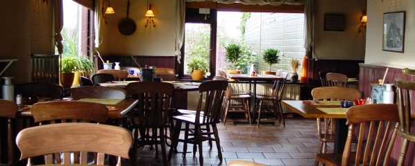
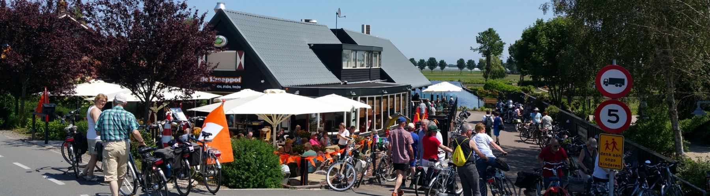
We hebben altijd een specialiteitenkaartje met minimaal drie extra pannenkoeken. Dit staat er nu op.

Spek-uipannenkoek rijkelijk belegd met hertengoulash.
22,00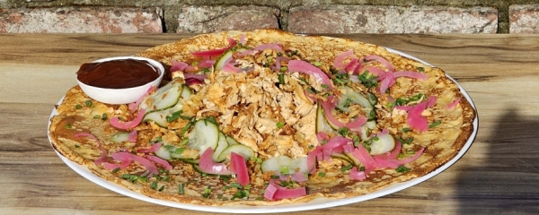
Pannenkoek met malse pulled chicken, zoetzure komkommer en zoetzure rode ui, krokant gebakken uitjes en bieslook. Geserveerd met een bakje BBQ-saus.
19,50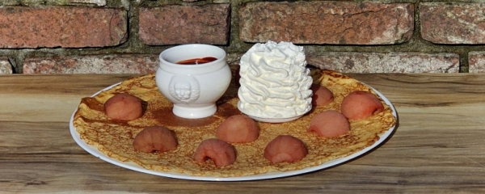
Pannenkoek met heerlijke warme stoofpeertjes. Geserveerd met warme chocoladesaus en slagroom.
18,90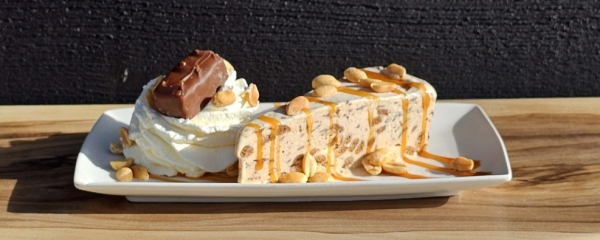
Snickerde snick Heerlijke Snicker-ijstaart met een flinke toef slagroom. 7,00
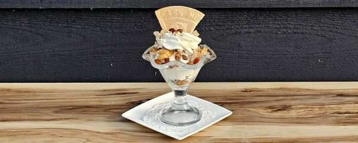
Coupe appeltaart Appeltaart in een coupe met roomijs, appeltaartsaus, rumrozijnen en slagroom. 8,70
Uit eten met kinderen moet vooral gezellig zijn. Daarom vind je achter in het restaurant onze eigen Stroopies Wereld: een gezellig restaurantgedeelte speciaal voor gezinnen met kinderen.
De kleinste Strooppotters kunnen er lekker spelen en een kijkje nemen in Stroopies Speelgoedwinkel. En dan is er ook nog onze eigen kinderbioscoop, de Stroopiescoop: een echte kleine bioscoop waar kinderen even lekker een filmpje kunnen kijken.
Vanuit Stroopies Wereld loop je zo naar buiten, naar Stroopies Speeltuin. Hier kunnen kinderen bij mooi weer lekker klimmen, klauteren en spelen. De speeltuin sluit aan op ons ruime terras, zodat papa, mama, opa en oma ondertussen rustig kunnen genieten.
Pannenkoek op? Dan snel weer spelen in Stroopies Wereld!
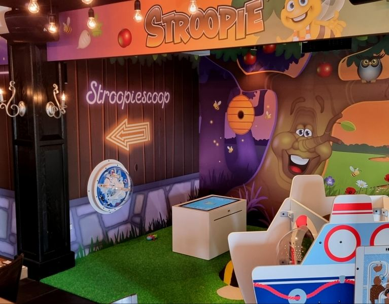
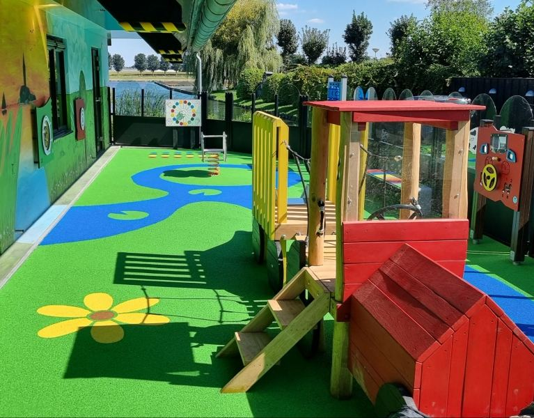
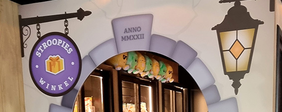
Je kind is alweer een jaar ouder en dat moet gevierd worden. We zetten de tafel in Stroopies Wereld klaar, met voor de jarige uiteraard een versierde stoel.
€ 11,90 per kind
€ 15,40 per kind
Met Stroopies munten kunnen de kinderen iets leuks uitzoeken in Stroopies Winkel.
Vanaf 7 jaar mogen kinderen zelf hun pannenkoek versieren; tot 7 jaar krijgen kinderen een pannenkoek met poedersuiker en lekkere versiersels.
Alleen op reservering (minimaal 2 dagen van tevoren), vanaf 5 kinderen. Kinderfeestjes zijn de hele week mogelijk, alleen niet op zaterdag en zondag na 16.00 uur.
Begeleiders kunnen eten en drinken van de kaart bestellen en doen niet mee aan het arrangement. Eten en drinken buiten het arrangement wordt voor de normale prijs van de kaart doorgerekend.
Feestje reserveren: bel onsDe Strooppot verzint regelmatig leuke acties voor onze gasten.
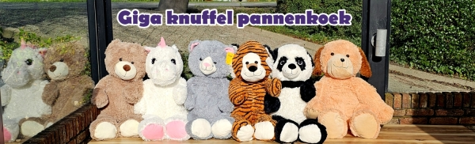
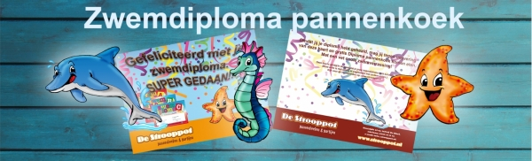
Alle kinderen die een kleurplaat inleveren, krijgen een verrassing als ze jarig zijn.
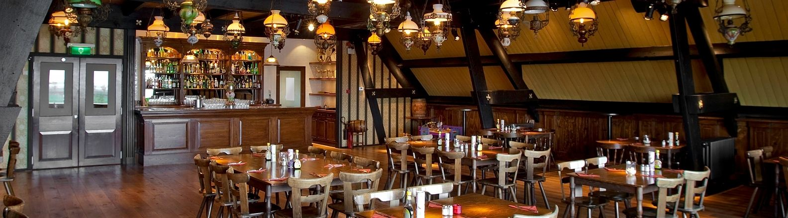
Of het nu gaat om een verjaardag, familiefeest, bedrijfsuitje, vereniging, fiets- of motorclub, puzzelrit of gewoon een gezellig samenzijn: bij De Strooppot ontvangen we graag kleine en grote gezelschappen.
Samen pannenkoeken eten is natuurlijk altijd een goed idee, maar er is meer mogelijk. Afhankelijk van de grootte en de wensen van het gezelschap kijken we graag naar een passende invulling. Voor grotere groepen kunnen we gebruikmaken van De Opkamer, onze sfeervolle ruimte op de bovenverdieping. Ook verzorgen we regelmatig buffetten bij mensen thuis, inclusief tafels, borden en bestek.
Komen er kinderen mee? In Stroopies Wereld en de buitenspeeltuin vermaken zij zich, terwijl de volwassenen gezellig natafelen.
Wil je met een groep komen eten of heb je iets te vieren? Bel ons gerust, dan denken we mee over de mogelijkheden en arrangementen.
Tussen de weilanden en aan de Kromme Mijdrecht ligt ons ruime terras, met maar liefst 130 zitplaatsen. Schuif aan voor een kop koffie met iets lekkers, een gezellige lunch, een drankje of natuurlijk één van onze vele pannenkoeken.
De Strooppot is een fijne tussenstop tijdens een fiets- of wandeltocht door het Groene Hart. Ook vanaf het water zijn we goed bereikbaar: vaar je over de Kromme Mijdrecht, dan kun je in de buurt aanleggen en bij ons neerstrijken. Honden zijn op het terras welkom, mits ze geen overlast veroorzaken.
Ben je met een groep op pad? Dan stellen we graag een arrangement naar wens voor je samen, te combineren met fietsen, wandelen of een overnachting in de omgeving.
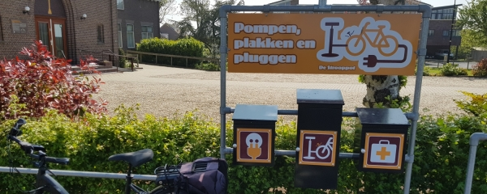
En achter De Strooppot op de parkeerplaats laad je je elektrische auto op terwijl je een pannenkoek eet. Parkeren is gratis.
Is er iemand jarig, heb je iets goed te maken of wil je zomaar iemand verrassen? Bij De Strooppot hebben we pannenkoekenbonnen die we voor ieder bedrag kunnen uitschrijven.
Bon bestellen: bel onsDinsdag t/m zondag kun je bij ons pannenkoeken afhalen. Vanwege drukte zijn we gestopt met bezorgen. Je mag ons altijd bellen of we op dat moment wel tijd hebben om te bezorgen.
Afhalen bestellen: 0297 59 37 7726 augustus 2026
Achter De Strooppot op de parkeerplaats kun je de elektrische auto opladen terwijl je een lekkere pannenkoek eet.
Een gezellig en goed gemotiveerd team, informeel en gericht op teamwork. Het keukenteam bestaat uit 3 vaste koks en ongeveer 12 parttimers, de bediening uit 2 vaste medewerkers en ongeveer 16 parttimers. Na het werk wordt er vaak nog even aan de bar gezeten.
Kom jij ons gezellige team versterken? Ervaring is niet nodig. Als je vriendelijk bent, graag met mensen werkt en van gezelligheid houdt, leren wij je de rest.
Wij bieden een goed salaris, fooi, gratis personeelsmaaltijden en vooral een leuke werkplek met fijne collega's.
Interesse? Bel of WhatsApp Marcel: 06-51543269, of mail naar info@strooppot.nl. Je mag natuurlijk ook gewoon eens binnenlopen om kennis te maken.
Ben jij toe aan een nieuwe uitdaging of een andere werksfeer? Wil je in plaats van fine dining met pannenkoeken gooien, het keukenteam laten schitteren, zorgen voor een leuke werksfeer, lekkere gerechten serveren, samen keihard lachen en keihard werken? Solliciteer dan bij ons! Als chef-kok bereid je onder andere de lekkerste pannenkoeken, samen met onze twee andere vaste koks en een groep parttimers.
Ben jij onze nieuwe kok? Stuur je cv naar info@strooppot.nl of neem contact op met Marcel Kentrop, 06-51543269.
| Maandag | gesloten |
|---|---|
| Dinsdag t/m vrijdag | vanaf 16.00 uur |
| Zaterdag en zondag | vanaf 11.00 uur (keuken vanaf 12.00) |
| Maandag | gesloten |
|---|---|
| Dinsdag t/m zondag | vanaf 11.00 uur (keuken vanaf 12.00) |
Tot 20.00 uur kun je binnenlopen en daarna nog lekker eten.
Wil je verzekerd zijn van een plekje? Reserveer vooraf je tafel. Zie je online geen plek op het gewenste tijdstip, bel ons dan gerust: niet alle plaatsen worden online aangeboden en vaak vinden we telefonisch toch nog een plekje. Met een grotere groep adviseren we altijd om te bellen.
Op drukke dagen gebruiken we De Opkamer (boven) als verlengstuk van het restaurant. Die is helaas niet bereikbaar voor rolstoelgebruikers; geef daarom bij je reservering aan of je kunt traplopen.
Reserveren: 0297 59 37 77Bij de inrichting van het restaurant hebben we, voor zover ons pand dat toestaat, rekening gehouden met rolstoelgebruikers. Er is een ruim mindervalidentoilet aanwezig.
Gratis parkeren voor de deur, laadpunt voor de elektrische auto. Helaas rijdt er geen openbaar vervoer naar De Hoef.
Neem afslag Vinkeveen, richting Vinkeveen N201. Passeer de afslag dorp Vinkeveen en passeer de drie afslagen (stoplichten) dorp Mijdrecht. Volg de N201 tot het tweede verkeerslicht bij Amstelhoek. Sla linksaf (links ziet u een tankstation). Direct weer linksaf (achter het tankstation langs). De weg heet eerst "Ringdijk 2de bedijking", later wordt dit "De Oude Spoorbaan". Deze weg volgen tot de ophaalbrug. Sla bij het verkeerslicht vóór de ophaalbrug over de rivier De Kromme Mijdrecht linksaf (De Hoef Oostzijde). Na 500 meter is De Strooppot aan je linkerhand.
Neem afslag Hoofddorp/Aalsmeer, richting Aalsmeer N201. Voorbij Aalsmeer de N201 blijven volgen richting Uithoorn. Volg de weg door Uithoorn en over de ophaalbrug tot de verkeerslichten bij Amstelhoek. Sla rechtsaf (rechts voorbij de stoplichten is een tankstation). Direct linksaf (achter het tankstation om). De weg heet eerst "Ringdijk 2de bedijking", later wordt dit "De Oude Spoorbaan". Deze weg volgen tot de ophaalbrug. Sla bij het verkeerslicht vóór de ophaalbrug over de rivier De Kromme Mijdrecht linksaf (De Hoef Oostzijde). Na 500 meter is De Strooppot aan je linkerhand.